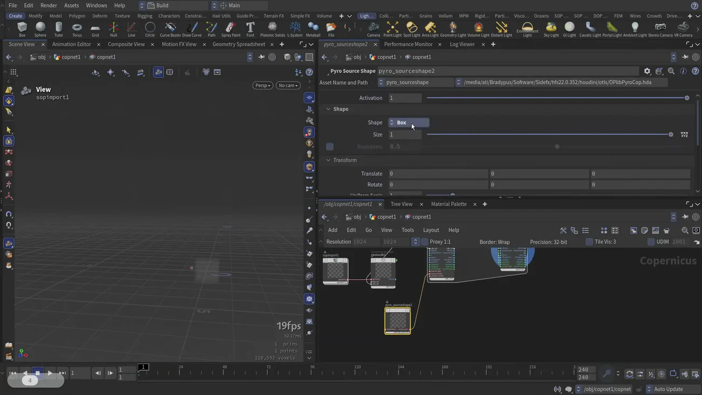

Pyro FX レシピ — これも Copernicus の話
出典: H22 - Pyro FX Recipes | Attila Torok | Houdini 22 HIVE （SideFX 公式 Houdini 22 HIVE の講演 / 講演者 Attila Torok さん / Houdini 22 / 36:03 / 英語）。 このページは、上記の動画を見ながら自分用にまとめた日本語の学習メモです。SideFX 公式の翻訳ではありません。
位置づけ
講演者自身の言葉です。
2つの Copernicus 講演に挟まれているが、実はこれも Copernicus を使っている。
前リリースで始まった Copernicus の Pyro ソルバの続きです。 「Pyro の話」として聞くと肩透かしですが、 Copernicus で流体を解くという路線の現在地を知る講演になっています。
話の流れ
| 時刻 | 内容 |
|---|---|
| 03:46 | density の出力を入力に繋ぐ必要がなくなった |
| 07:29 | Pyro Source Shapes — implicit surface ベースの新しいソーシング方法 |
| 11:16 | 基本形状（box など）を使う例 |
| 15:02 | velocity に効かせ、density で制御する。Control Mass |
| 18:42 | flame を使うには明示的に有効化する必要がある |
| 22:25 | Adaptive Confinement |
| 26:07 | 現時点の制約 — 可視化について |
| 29:47 | 今後の予定 — シェルフツール化 |
| 33:35 | Q&A: COPs 内の Pyro でライティングや編集はできるか |
1. 配線が減った
density の出力を入力に繋ぐ必要がなくなりました。
効果は2つです。ネットワークが煩雑にならないこと、そして ブロック内にノードを置きたいときも簡単に外せることです。
ハウツーの Pyro の回で 「COP Pyro Block 2.0 では主要な設定が全部 Block End に載っている」という話が出てきましたが、 同じ方向の整理です。ブロックの内側に手を入れる必要を減らすという設計になっています。
2. Pyro Source Shapes — implicit surface
新しいソーシング方法です。点を出力して Pyro Solver のジオメトリ入力に差します。

| パラメータ | 内容 |
|---|---|
| Shape | Box など基本形状 |
| Size / Roundness | 形の調整 |
| Transform | 位置と向き |
基本形状を使う例が 11:16 からで、 implicit surface のワークフローが自動で処理してくれる部分があるという話が出てきます。
数式で面を記述するので、形が解像度に依存しません。 ソースの形を作るためにジオメトリを組む必要が減ります。
3. velocity と Control Mass
velocity に効かせて density で制御する、という使い方です。 Control Mass を有効にします。
| レンジ | 既定でほぼ良いとのことです |
| Uniform Scale | 変えると効き方が変わります |
4. flame は明示的に有効化する（重要）
ここが引っかかりやすい仕様です。
flame を使いたいなら明示的に有効化する必要があります（direction も同様）。 しないと flame フィールドは空のまま advect もされません。
「炎が出ない」と悩むときの原因がこれです。 フィールドが存在しないので、当然何も流れません。
カスタムフィールドは feedback 入力に入れます。
5. Adaptive Confinement
confinement をどこに効かせるかを賢く判断してくれます。
そして警告があります。効かせすぎるとシミュレーションが止まり、 空間的な白ノイズだらけになります。
渦を締めて形を保つのが confinement ですが、締めすぎると流れそのものが死ぬ、という話です。 「賢く判断する」機能があっても、量の判断は人の側に残ります。
6. 現時点の制約 — 可視化
この講演でいちばん実用的な情報がこれだと思います。
density と fire を合成した適切なボリューム可視化ができません。 （SOP の volume visualizer に相当するものが無い）
ハウツーの Pyro の回では、 色を見るために Mono to RGB と VDB Visualize を自分で組む手順を扱っています。
なぜそんな手間が必要なのかの答えがここにあります。 手順書だけ読むと「面倒だな」で終わりますが、 そもそも用意されていないから自分で組んでいると分かると納得できます。
逆に言えば、ここが用意された時点でハウツーの手順は短くなるはずです。
7. 今後の予定
すべてのパーティクルエフェクトがシェルフツールになる予定だそうです。 オンラインで探さずに直接使えるようになります。
レシピという形で配るのではなく、標準の道具として入れる方向です。
この講演から持ち帰るもの
- これも Copernicus の話です。Copernicus で流体を解く路線の続きになっています
- density の出力を入力に繋ぐ必要がなくなりました。ブロックの内側に手を入れる必要を減らす方向です
- Pyro Source Shapes は implicit surface ベースで、点を出力して Pyro Solver のジオメトリ入力に差します
- velocity 制御には Control Mass。レンジは既定でほぼ良く、Uniform Scale で効き方が変わります
- flame と direction は明示的に有効化しないと、フィールドが空のまま advect もされません
- カスタムフィールドは feedback 入力に入れます
- Adaptive Confinement は効かせすぎるとシミュレーションが止まり、白ノイズになります
- density と fire を合成した可視化はまだありません。だから Mono to RGB と VDB Visualize を自分で組む必要があります
- 今後パーティクルエフェクトがシェルフツール化される予定です